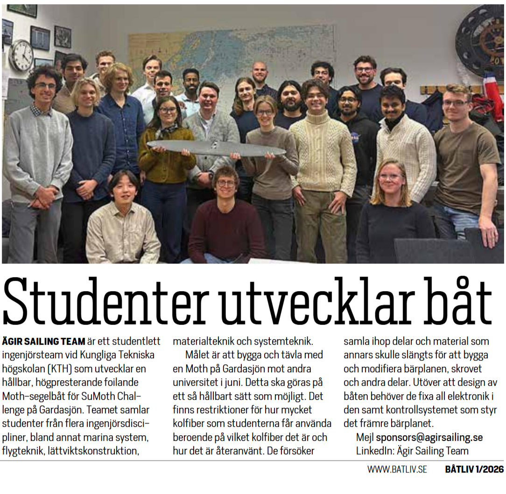

All the team's news

Feature article in Båtliv magazine
February 2026
February 2026
Båtliv is the boaters' magazine and the official organ of the Swedish Boat Union, the national organisation for Sweden's boat clubs. In a feature article we had the opportunity to present the SuMoth project, our pluridisciplinary team and our goal of builduing a moth that is as sustainable as possible. Read the article in "Tidningen Båtliv nr 1 2026".